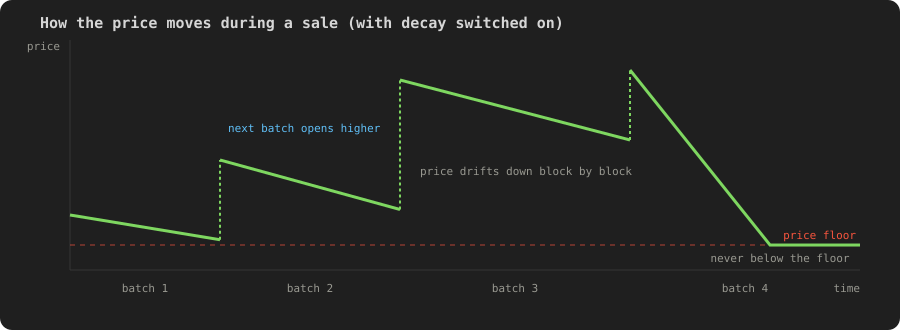
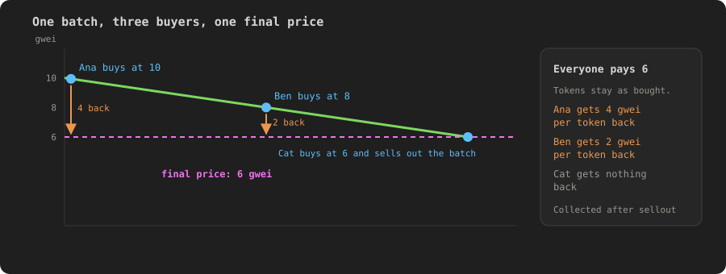
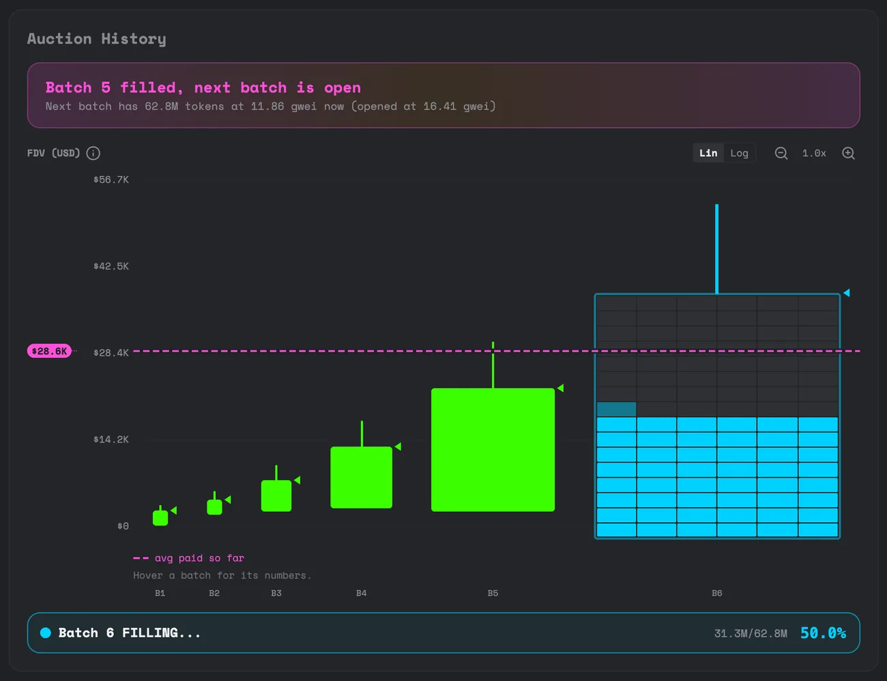

Pricing: batches, growth and decay
A sale doesn't run at one price. It's split into batches, and the price moves in two ways: it steps up at each new batch, and it can drift down inside a batch.

Batches
The creator sets the first batch's size and opening price, then two growth settings: how much bigger each batch is than the last, and how each batch's opening price compares to the average price people paid in the batch before. Both can be anywhere from 1.3 to 3 times. A new batch never opens below the price floor.
By default each batch is twice the size of the one before and opens at 1.3 times the average price paid in it, so a sale on the defaults fills in five batches. Most of the money is raised in the last few.
Decay
With price decay on, the price falls a little every block from the moment the batch opens, until the batch sells out or the price reaches the floor. Buying doesn't pause it or reset it. Only a new batch resets it.
Decay is on by default: unless it sells out first, the first batch's price falls to the floor in about an hour. A creator can set decay to zero instead, which keeps the price flat inside each batch so it only changes when a batch closes.
The price never decays below the price floor the creator set, so it can't fall to nothing while a batch waits for buyers.
Everyone in a batch pays the same price
When a batch sells out, the price at that moment becomes the batch's final price, and everyone who bought in that batch pays it. With decay switched on, that's the lowest price the batch reached.
You keep exactly the number of tokens you bought. If you paid more per token than the final price, the difference is yours, in ETH. You collect it once the whole sale has sold out, from the same place you claim your tokens.

| Buyer | Bought at | Tokens | Paid | Final price cost | ETH back |
|---|---|---|---|---|---|
| Ana | 10 gwei | 1,000,000 | 0.010 ETH | 0.006 ETH | 0.004 ETH |
| Ben | 8 gwei | 1,000,000 | 0.008 ETH | 0.006 ETH | 0.002 ETH |
| Cat, whose buy sells out the batch | 6 gwei | 1,000,000 | 0.006 ETH | 0.006 ETH | None |
So nobody loses out for buying early in a batch. Being early gets you into the batch before it sells out, and you still end up paying the same as the last buyer.
With decay at zero, the price inside a batch never changes, so everyone pays the same anyway and there's nothing to get back.
The ETH back only exists if the whole sale sells out. If the sale misses its deadline instead, you get back everything you paid, through the normal refund. You never get both. See When a sale doesn't sell out.
What this means when you buy
- Your buy fills straight away at the current price. There's no bidding and nobody can outbid you.
- If your buy finishes a batch, the leftover ETH comes back in the same transaction.
- Under Price limit, This batch only fills your buy in the open batch, at up to its price. Any batch lets it fill in the next one if this one sells out first.
- If the sale has decay, buying early in a batch doesn't cost you more in the end: you pay the batch's final price and get the difference back. Waiting only risks the batch selling out without you.
Reading the chart

- Each square is a batch, labelled B1, B2 and so on. A bigger square is a bigger batch, and a square that sits higher has a higher price.
- The axis shows FDV: the price times the full 1 billion supply, in dollars. Switch it to a log scale if the early batches are too small to see.
- The batch open now fills up as people buy. If the price has decayed, a thin line above a square shows how far it fell from its opening price.
- The dashed line is the average price paid so far. That's roughly where trading would open if the sale sold out now. See The pool at sellout.
- The banner above the chart tells you what just happened, for example that a batch has filled and the next is open.
- Hover over a square for its numbers, including the per-token price, and use the zoom buttons to look closer. The ⓘ next to the axis explains the chart.
The Auction Progress bar under the price is the share of the 500 million tokens on sale that have been bought. At 100% the sale has sold out.